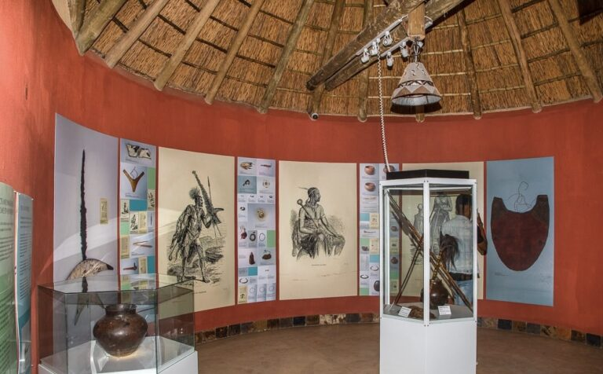

1. Mountains of Lesotho
Discover the impressive mountain scenery that makes Lesotho known as the Mountain Kingdom.

Discover the Mountain Kingdom of Lesotho. Explore beautiful mountains, waterfalls, historical places, Basotho culture and the natural beauty of our country.
Welcome to the Lesotho Tourism Gallery! Explore photographs of the country's mountains, waterfalls, cultural heritage, historical sites and beautiful landscapes. Lesotho offers many exciting destinations for visitors interested in nature, history, adventure and local traditions.
Click on any image to view it in a larger window.
Discover the impressive mountain scenery that makes Lesotho known as the Mountain Kingdom.

Enjoy the country's valleys, open landscapes and beautiful natural surroundings.
.jpg)
Explore the highlands and enjoy scenery suited to sightseeing, hiking and photography.

Visit places such as Thaba Bosiu to learn about King Moshoeshoe I and Basotho history.
.jpg)
Discover outdoor destinations and appreciate the importance of protecting the environment.
.jpg)
Explore the scenery of Lesotho and discover destinations beyond a single historical site.